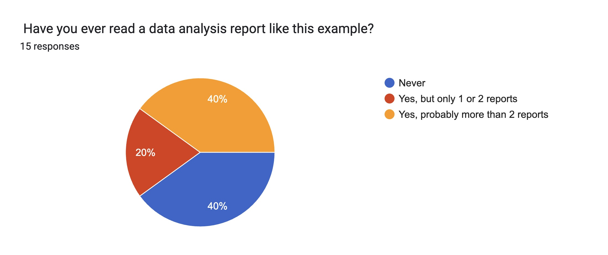
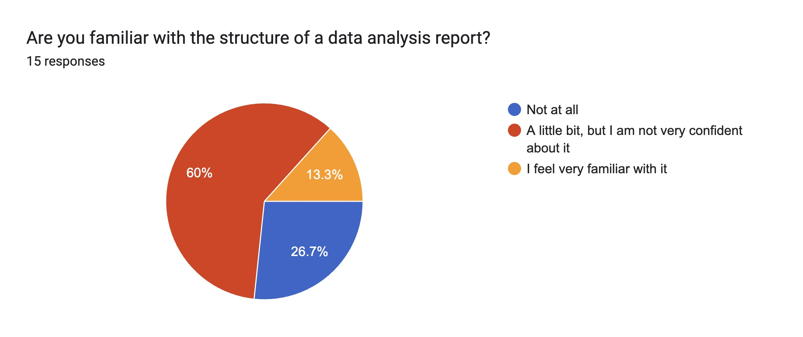
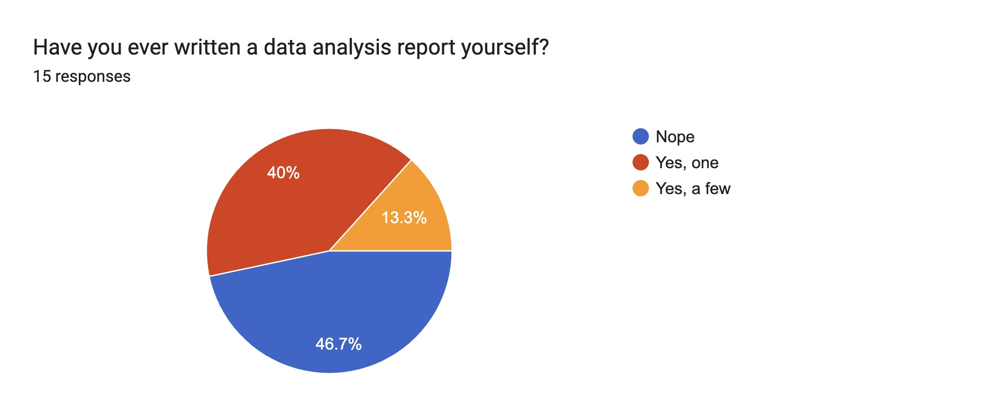
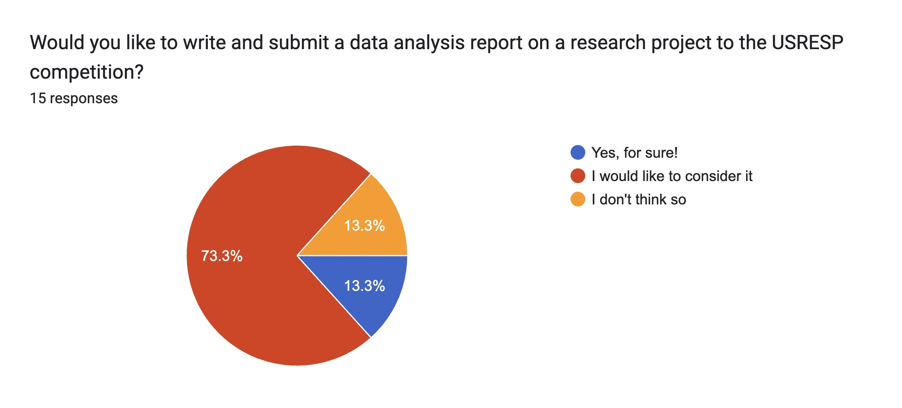
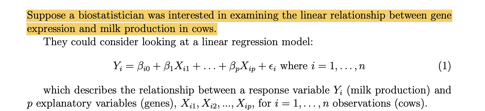
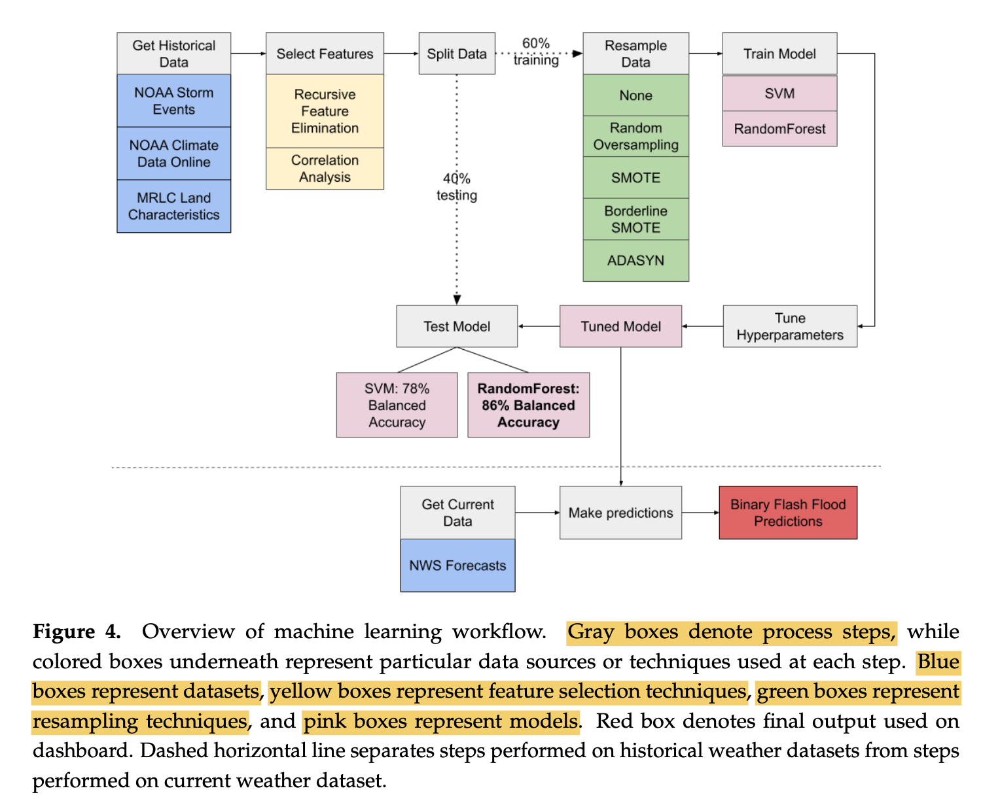
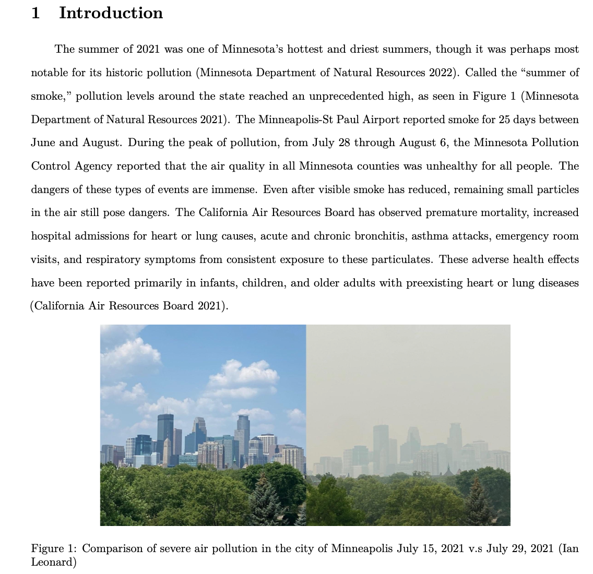
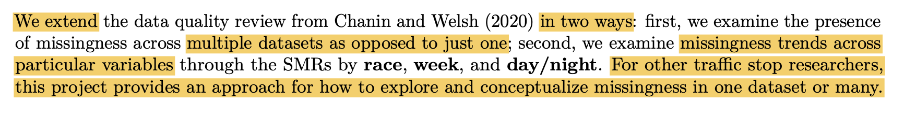
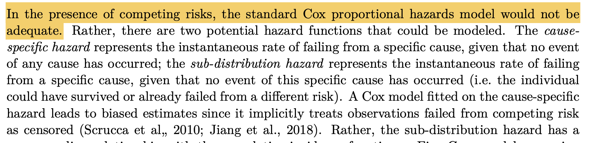

Writing a Data Analysis
report
ISI-BUDS 2023
Federica Zoe Ricci
Link to slides
On the website with the ISI-BUDS Summer 2023 Schedule
GitHub
Look for your research team repo writing-workshop-teamXX and clone it
Set up
Sit close to your research team members
About Me
Federica Zoe Ricci
4th Year PhD student in Statistics at UC Irvine
Interests
Network data, Bayesian nonparametrics, Statistics education
Background
BS in Management for Arts, Culture and Communication (Bocconi, Milan)
MS in Economics (Bocconi, Milan)
About you: DA reading experience
About you: DA structure familiarity
 ## About you: DA writing experience

About you: what you may like about writing
I have written data analysis reports for school projects and assignments, but not in the format of an actual data analysis report. Based on the example above, I really liked how the report was structured because it makes it easier to read and understand. I also liked how the charts and tables are included too to refer to when reading the report.
making the analyzed data to look easy.
I liked the puzzle of structuring the report and figuring out the best way to tell a story
It’s satisfying to be able to present research to others. There isn’t much point to research without sharing it.
About you: what you may dislike about writing
Not sure what is important, and which one is not. What to include or not
Figuring out where to start and formatting
I don’t think I’m very good at writing, and thus I can sometimes iterate too many times over my work and obsess over making it better
About you: submitting to USRESP
About this workshop
What we will learn: writing a data analysis (DA) report
USRESP competition guidelines
writing papers in RStudio + references management
How we will learn
Asking ourselves questions (e.g. why we like/dislike a title)
Examples
Practice
Learn from each other
DA Report: Big picture
DA report VS. Creative Writing
Question
How is a DA report different from creative writing?
- There is a lot of structure
“It felt very straight forward […] as in there seemed to be a set of common things people did in data analysis reports that you just needed to do”
(From one of your responses to What did you like of writing the report?)
- There are bricks to build with
- They are determined by your research project. e.g., figures, tables, previous research findings
You don’t really start from a blank page
Not a ton of room for creativity
“The writing in data analysis reports often feels very clinical and boring”
Types of DA report
USRESP identifies 2 main types of projects:
application focused
methodology focused (i.e. focused on the properties of a statistical method)
Some submissions to USRESP are applied research projects using existing statistical/analytical techniques to solve real world problems, while others are methodological research involving statistical applications or simulation studies evaluating different techniques.
Practice
Can you tell the type from the title of past USRESP submissions?
Performance of LDA And QDA On Non-Normally Distributed Predictors
- methodology
Spatial Modeling Of Bird Populations Using Citizen Science Data
- application
Behind The Smoke: An Extreme Value Analysis Of Air Pollution In Minnesota
- application
An Evaluation Of Regularization Methods: When There Are More Predictors Than Observations
- methodology
A good DA report
Question
What makes for a good DA report?
It is clear and easy to read
It tells an interesting story
It makes a good statistical analysis and explains the results well
From Assessment of the USRESP projects on causeweb.org/usproc/usresp
Some general criteria that the judges may use include:
- Overall clarity and presentation
- Originality, creativity, and significance of the study
- Accuracy of data analysis, conclusions, and discussion
Each project will be judged by multiple judges. The judges have expertise in statistics but do not necessarily have expertise in the applied domain of your paper. Therefore, you should construct a paper that is understandable to a reader with little knowledge of any applied domains that relate to your paper.
A good DA report: clarity and presentation
Example
Make notation concrete
From An Evaluation Of Regularization Methods: When There Are More Predictors Than Observations (Kenny Chen, honorable mention at 2021 Fall USRESP)

A good DA report: clarity and presentation
Example
Design visualizations that help digest complicated methods + Write clear figure captions
From Storm Chasers: Synthesizing New England Weather Data On A Dashboard For Emergency Response Workers (Irene Foster, Sunshine Schneider, Caitlin Timmons, Katelyn Diaz,winner at 2022 Fall USRESP)

A good DA report: originality, creativity and significance
Example
Originality
From Behind The Smoke: An Extreme Value Analysis Of Air Pollution In Minnesota (Yicheng Shen, Jacob Flignor, Libby Nachreiner, & Karen Wang , winner at 2022 Spring USRESP)

A good DA report: originality, creativity and significance
Example
Significance
From Exploring Missingness and its Implications on Traffic Stop Data (Amber Lee, winner at 2020 Fall USRESP)

A good DA report: accuracy
Example
Choosing a statistical model that accounts for specific aspects of the application considered (and motivating the choice)
From Psychiatric Comorbidity In Opioid Use Treatment Outcomes (Linda Tang, winner at 2021 Fall USRESP)

DA Report: Fine picture
Two questions
Question
Why do we write a DA report?
To let someone else learn about:
an interesting problem (that they might not know)
ways to approach the problem (that they might not know!)
what results one gets when they approach the problem in these ways
what insights these results tell us (and how they relate to other insights that people could read elsewhere)
Question
What are the common sections of DA report?
From USREP - Report Template:
Title
Abstract
Introduction (aka Background)
Methods
Results
Discussion/Conclusion
- References
Two questions Two ways of asking the same question
Question
Why do we write a DA report?
To let someone else learn about
an interesting problem (that they might not know)
ways to approach the problem (that they might not know!)
what results one gets when they approach the problem in these ways
what insights these results tell us (and how they relate to other insights that people can find elsewhere)
Question
What are the common sections of DA report?
From USREP - Report Template:
Title
Abstract
Introduction (aka Background)
Methods
Results
Discussion/Conclusion
- References
Introduction
Question
Guess what makes for a good introduction according to USRESP judging criteria?
Does the background and significance have a logical organization? Does it move from the general to the specific?
Has sufficient background been provided to understand the paper? How does this work relate to other work in the scientific literature?
Has a reasonable explanation been given for why the research was done? Why is the work important? Why is it relevant?
Does this section end with statements about the hypothesis/goals of the paper? :::
Introduction
Example
Individually, read the snippet in 01-practice-introduction.qmd in the folder practice
(5 min)
Practice
Discuss with your team members:
How do you think the snippet did, with reference to the USRESP judging criteria?
What could be improved?
(5 min)
Learn from each other
Let’s share our thoughts between all groups.
(5 min)
Methods
What should be included (according to USRESP template):
Data collection
Explain how the data was collected/experiment was conducted. Additionally, you should provide information on the individuals who participated to assess representativeness. Non-response rates and other relevant data collection details should be mentioned here if they are an issue. However, you should not discuss the impact of these issues here - save that for the limitations section.Variable creation
Detail the variables in your analysis and how they are defined (if necessary). For example, if you created a combined (frequency times quantity) drinking variable you should describe how. If you are talking about gender no further explanation is really needed.Analytic Methods
Explain the statistical procedures that will be used to analyze your data. E.g. Boxplots are used to illustrate differences in GPA across gender and class standing. Correlations are used to assess the impacts of gender and class standing on GPA.
Methods
Question
Guess what makes for a good method section according to USRESP judging criteria?
- Could the study be repeated based on the information given here? Is the material organized into logical categories [like the ones in the previous slide]?
Methods
Example
Individually, read the snippet in 02-practice-methods.qmd in the folder practice
(5 min)
Practice
Discuss with your team members:
Parts of methods covered in the snippet
What you understand well by reading the snippet
What is unclear from the snippet
(5 min)
Learn from each other
Let’s share our thoughts between all groups (if there is time).
(5 min)
Results
How USRESP guidelines suggest to frame the results section:
- typically, results sections start with descriptive statistics
- information presented must be relevant in helping to answer the research question(s) of interest
- typically, inferential (i.e. hypothesis tests) statistics come next.
- Tables and figures are useful in this section and should be labeled, embedded in the text, and referenced appropriately.
And here are the USRESP assessment questions:
Is the content appropriate for a results section? Is there a clear description of the results?
Are the results/data analyzed well? Given the data in each figure/table is the interpretation accurate and logical? Is the analysis of the data thorough (anything ignored?)
Are the figures/tables appropriate for the data being discussed? Are the figure legends and titles clear and concise?
Results
Example
Let’s read this snippet together
(From the Results section in Psychiatric Comorbidity In Opioid Use Treatment Outcomes by Linda Tang, winner at 2021 Fall USRESP)
Addressing our primary analysis, we observed that having psychiatric comorbidity is associated with higher incidence of treatment dropout and lower incidence of treatment completion. More specifically, holding all else constant, a client with psychiatric comorbidity is expected to have 1.05 times the subdistribution hazard of dropping out of the treatment and 0.91 times the subdistribution hazard of completing a treatment compared to a client without psychiatric comorbidity. Although the effect size of this association is modest, it still highlights that the current treatment programs need to better accommodate the special needs of this subgroup of clients.
Practice
Can you guess:
one thing that I like about the snippet
two things that I think could be improved
Discussion
Here are the USRESP assessment criteria:
Does the author clearly state whether the results answer the question (support or disprove the hypothesis)?
Were specific data cited from the results to support each interpretation? Does the author clearly articulate the basis for supporting or rejecting each hypothesis?
Does the author adequately relate the results of the current work to previous research?
Example
Individually, read the snippet in 04-practice-discussion.qmd in the folder practice (2 min)
Practice
Think about these questions: (2 min)
Can you identify the strong elements in this snippets (according to USRESP assessment criteria)?
Are there any weaker elements in this snippets (according to USRESP assessment criteria)? What would you suggest to change?
Learn from each other
Let’s share our thoughts between all groups (if there is time).
(5 min)
Abstract
Question
What is an abstract?
The abstract provides a brief summary of the entire paper (background, methods, results and conclusions). The suggested length is no more than 150 words. This allows you approximately 1 sentence (and likely no more than two sentences) summarizing each of the following sections. Typically, abstracts are the last thing you write.
Assessment: Are the main points of the paper described clearly and succinctly?
Abstract
From Investigation Of NCAA Basketball’s Three Point Strategy Using Logistic Mixed Effects Regression Model by (Che Hoon Jeong, winner of 2022 Fall USRESP):
Example
Several studies have presented the increase of three point shot attempts and its significance in winning games in the National Basketball Association (NBA). However, there are limited quantitative research on whether collegiate basketball reflects the three-point strategy of the NBA. This paper conducts a Seasonal Mann-Kendall test to present a statistically significant increase in three-point shot distance in NCAA Division 1 basketball, which reflects the trend of the NBA. The Logistic Mixed Effects Regression reveals that each three-point attempt decreases the probability of winning on average, whereas a made three-point shot increases the probability of winning the most out of the sixteen variables used in the model. Thus, designating three-point shots primarily for efficient three-point shooters may increase the chances of winning. Nevertheless, drafting sharpshooters and developing three-point shooting skills may benefit teams in the long-run, who may capitalize on the impact of successful three-point shots.
Abstract
From Investigation Of NCAA Basketball’s Three Point Strategy Using Logistic Mixed Effects Regression Model by (Che Hoon Jeong, winner of 2022 Fall USRESP):
Example
Several studies have presented the increase of three point shot attempts and its significance in winning games in the National Basketball Association (NBA). However, there are limited quantitative research on whether collegiate basketball reflects the three-point strategy of the NBA. This paper conducts a Seasonal Mann-Kendall test to present a statistically significant increase in three-point shot distance in NCAA Division 1 basketball, which reflects the trend of the NBA. The Logistic Mixed Effects Regression reveals that each three-point attempt decreases the probability of winning on average, whereas a made three-point shot increases the probability of winning the most out of the sixteen variables used in the model. Thus, designating three-point shots primarily for efficient three-point shooters may increase the chances of winning. Nevertheless, drafting sharpshooters and developing three-point shooting skills may benefit teams in the long-run, who may capitalize on the impact of successful three-point shots.
Introduction (aka Background)
Methods
Results
Discussion/Conclusion
DA Report: Tools
Demonstration
In the template folder in your repo.
Quarto for DA reports
child-documents
section planning
cross-references Sections, Equations, Figures and Tables
Zotero for references
- how I look for literature
Zotero + Quarto
DA Report: Feedback
Give others feedback
Highlight strengths (so they know what is good, what they don’t need to change)
Identify potential weak points or issues and, when possible, suggest ways to improve
We have been doing it all along!
Give yourself feedback
- [Hint] Once you are done with putting your report together, leave it for a few days and then go back to it to review it, if you can.
Receive feedback
Remember: Everything can be improved.
Someone took time to read your work and tell you what they thought of it. You get the chance to see how your work reads in someone else’s hands. Your goal is to understand from them what you could improve, e.g. make more clear.
Sometimes we receive “bad” feedback (non-constructive, perhaps even offensive). Try and feel grateful anyways (see point above). Don’t lose all your confidence, but also interrogate yourself. Say thank you anyways and ask follow up questions.
Questions?
.. on writing DA reports
.. on submitting to USRESP
.. something else you’re curious about
Your Feedback for me
Link: bit.ly/isi-buds-writers
QR code: